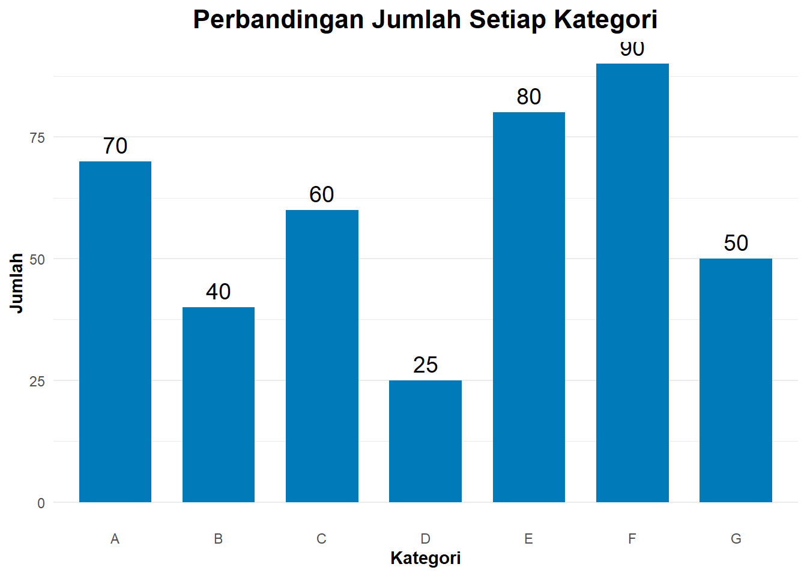
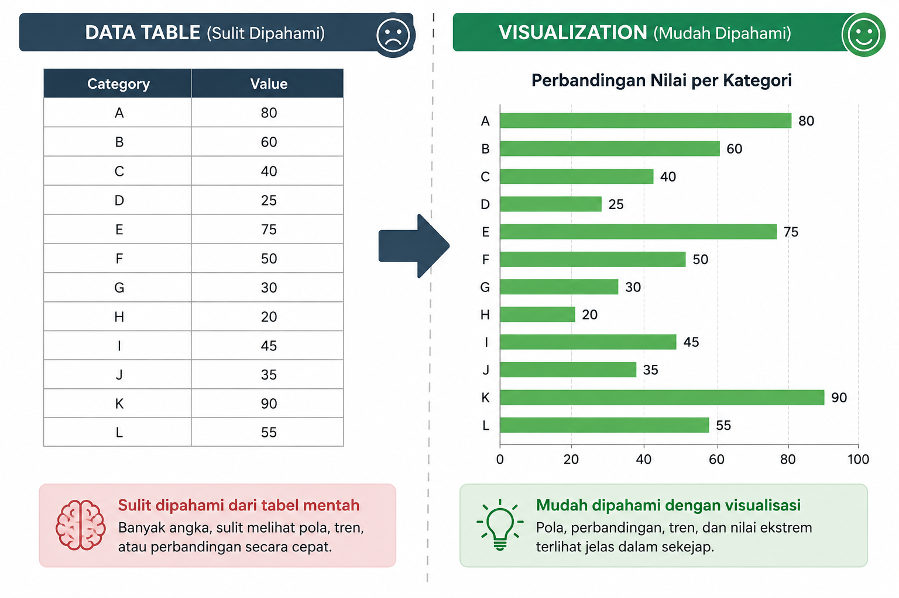
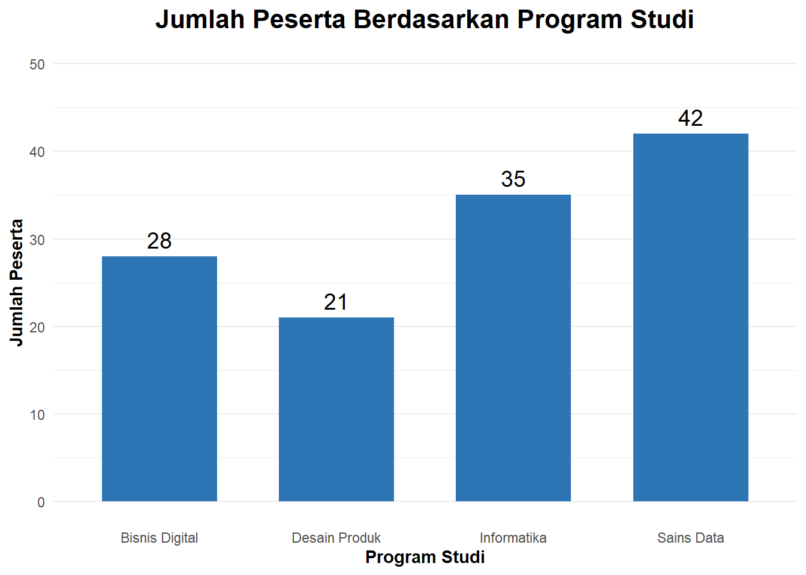

Introduction to Data Visualization
Pada bagian ini, kita akan mengenal dasar-dasar visualisasi data. Fokusnya bukan pada membuat grafik sebanyak mungkin, tetapi memahami mengapa, kapan, dan bagaimana sebuah grafik digunakan.
1 Apa Itu Data Visualization
Data visualization adalah proses menyajikan data dalam bentuk visual agar informasi lebih mudah dipahami. Visualisasi dapat berupa grafik, diagram, peta, tabel, dashboard
Tujuan utamanya adalah membantu kita melihat informasi yang sulit ditemukan dari data mentah. Visualisasi dapat membantu menemukan:
- Pola
- Perbedaan
- Tren
- Hubungan
- Nilai yang tidak biasa

NoteNote
Visualisasi bukan sekadar membuat data terlihat menarik tapi dapat digunakan untuk membantu memahami data.
2 Mengapa Data Perlu Divisualisasikan
Data dalam bentuk tabel dapat memberikan informasi yang lengkap. Namun, semakin banyak data yang tersedia, semakin sulit pola terlihat secara langsung.
Visualisasi membantu menyederhanakan informasi tersebut.
Contohnya, data berikut dapat menunjukkan jumlah peserta berdasarkan kategori:
| Kategori | Jumlah |
|---|---|
| A | 80 |
| B | 60 |
| C | 40 |
| D | 25 |
Angka tersebut dapat dibaca dari tabel. Namun, grafik membuat perbedaan antar kategori dapat dikenali dengan lebih cepat.
3 Data, Informasi, dan Insight
Data, informasi, dan insight memiliki peran yang berbeda.
Data → merupakan nilai atau fakta yang dikumpulkan.
Informasi → memberikan konteks terhadap data. > Contoh: Kategori F memiliki jumlah paling tinggi.
Insight → pemahaman yang diperoleh setelah data dianalisis. > Kategori F memiliki jumlah angka yang jauh lebih tinggi dibandingkan kategori lainnya.
TipNote
Insight membutuhkan interpretasi. Grafik yang bagus belum tentu menghasilkan insight yang bagus.
4 Memilih Visualisasi yang Tepat
Tidak semua data cocok menggunakan grafik yang sama. Pemilihan visualisasi harus disesuaikan dengan pertanyaan yang ingin dijawab.
| Tujuan | Visualisasi |
|---|---|
| Membandingkan kategori | Bar Chart |
| Melihat perubahan | Line Chart |
| Melihat hubungan | Scatter Plot |
| Melihat distribusi | Histogram |
| Melihat sebaran kelompok | Boxplot |
Contohnya:
TipBar Chart
Kategori mana yang memiliki nilai paling tinggi?
TipLine Chart
Bagaimana perubahan nilai dari waktu ke waktu?
TipScatter Plot
Apakah dua variabel memiliki hubungan?
5 Contoh Sederhana
Sekarang kita lihat contoh sederhana. Terdapat data jumlah peserta berdasarkan program studi.
| Program Studi | Jumlah |
|---|---|
| Sains Data | 42 |
| Informatika | 35 |
| Bisnis Digital | 28 |
| Desain Produk | 21 |
Pertanyaan yang ingin dijawab:
Program studi mana yang memiliki jumlah peserta paling banyak?
Karena fokusnya adalah membandingkan beberapa kategori, Bar Chart dapat digunakan. Hasil visualisasinya akan memperlihatkan perbedaan jumlah dengan lebih jelas.

6 Apa yang Akan Kita Kerjakan
Dalam kegiatan ini, prosesnya akan berjalan melalui beberapa tahap:
Kita akan menggunakan RStudio untuk menjalankan proses tersebut. Beberapa hal yang akan dipelajari:
- Mengambil data
- Memahami struktur data
- Membuat visualisasi
- Memilih grafik yang sesuai
- Membaca pola
- Menemukan insight
- Menyajikan hasil analisis
Pada bagian berikutnya, kita akan mulai bekerja dengan RStudio dan Dashboard.
NoteRemember
Start with a question, not a chart.
Tentukan apa yang ingin diketahui terlebih dahulu. Setelah itu, pilih visualisasi yang paling sesuai.